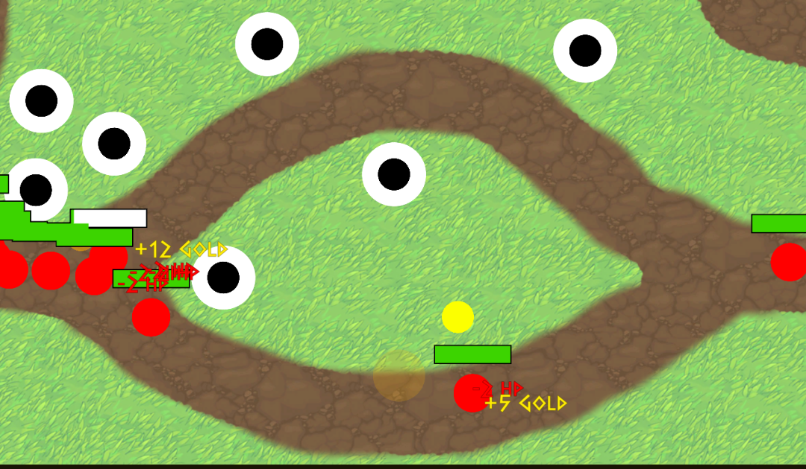

Tower Defense
The Project
In this project I was tasked to make a tower defense game on my own and put a original spin on it.
The execution
The first part of the game was to make a enemy movement script which I did with a waypoint system. Then I started to work on a tower shooting system and a enemy prediction algorithm. After that I made a system that chose one of the 3 maps that i made and put the waypoints on the correct spot. I then made a ui element where you could see how many lives you had left, turn on build mode, activate the next wave and place the towers in build mode. Next I made a money system and different enemies that had different stats and could spawn different enemies on death. lastly I made a win and lose screen and made the tower bullets explodable.